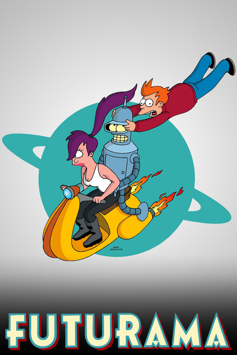

Futurama (Aired 1999-2013)
Rating: 8.6/10
Age Restriction: TV-14
Fry, a pizza guy is accidentally frozen in 1999 and thawed out New Year's Eve 2999.
Creators: David X. Cohen, Matt Groening
Cast
Billy West as .... Philip J. Fry
Katey Sagal as .... Turanga Leela
John DiMaggio as .... Bender
Tress MacNeille as .... Linda
Phil LaMarr as .... Hermes Conrad
Lauren Tom as .... Amy Wong
Maurice LaMarche as .... Morbo